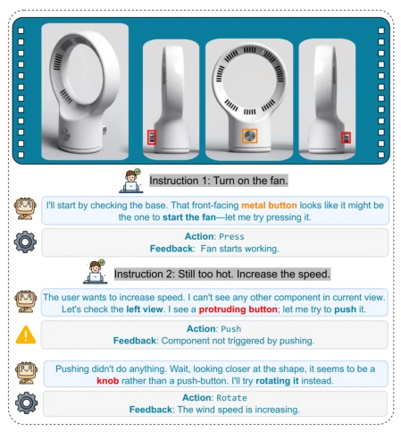
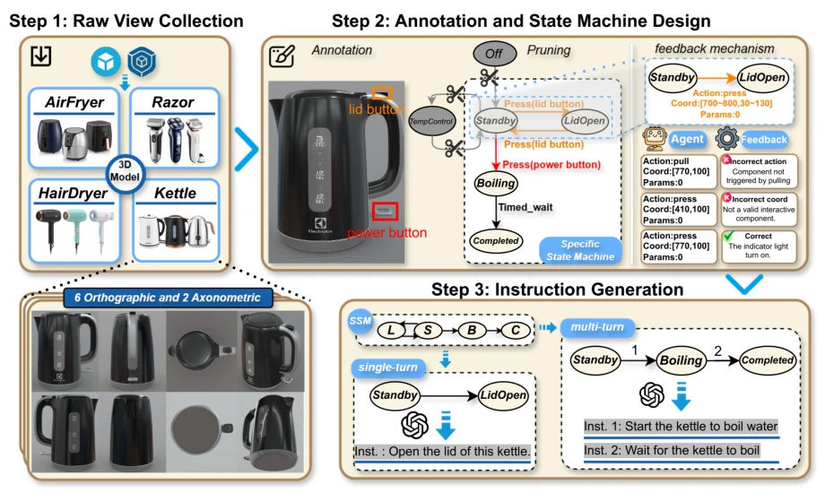
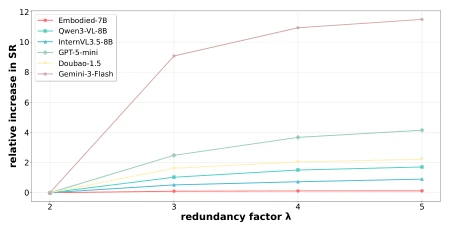
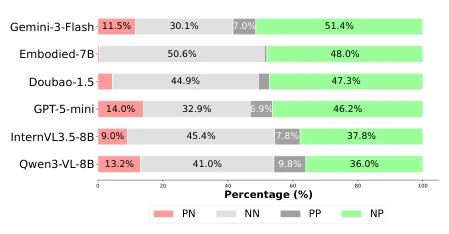
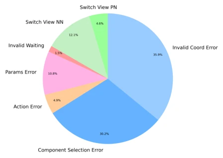
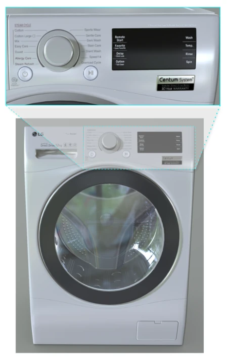

This paper casts a cold shower on VLMs' embodied exploration capabilities while also pointing the way forward. VGEBench indeed fills the evaluation gap for "operating new devices without manuals"; its logic-driven state machine design is clever, transforming physical feedback into a verifiable closed loop. However, do not celebrate too early; the 968 3D models are ultimately "paper tigers", and the "perfection" within the simulation environment is still worlds away from the physical uncertainty of the real world. Gemini-3-Flash achieving a 54% success rate is already respectable, while other models are basically "guessing", indicating that VLMs have not yet learned to map abstract knowledge to specific knobs. Although the authors emphasize "generalizability", the data source comes from Sketchfab, and closed-source models may have encountered similar renderings, which introduces a degree of uncertainty to the evaluation. However, it successfully reveals the current VLMs' shortcomings in long-range state tracking and fine-grained localization, serving as a necessary "mirror to reveal demons". In the future, if combined with real robot data, it may further verify its generalization ability.
研究动机Motivation
现有具身 AI 要么依赖模仿学习（如 BEHAVIOR-1k），要么依赖 API 文档（如 BFCL）。这些范式忽略了“假设 - 交互 - 修正”的动态过程。Table 1 显示，HomeBench 依赖虚拟智能家居，PhysToolBench 依赖物理工具但缺乏多轮反馈。人类能凭常识操作未知设备，AI 却卡在静态识别上。我们需要评估 VLM 在无文档下，如何通过视觉感知和反馈推理来操作新设备，这是通往 AGI 的关键一步。现有基准如 BFCL (Patil et al., 2025) 侧重 API 调用，PhysToolBench (Zhang et al., 2025) 侧重工具使用，HomeBench (Li et al., 2025) 侧重智能家居逻辑，但都缺乏对物理界面细粒度交互和动态反馈的评估。此外，传统 RL/IL 方法（如 Shridhar et al., 2021）依赖特定环境训练，难以泛化到未见设备。
Existing embodied AI either relies on imitation learning (e.g., BEHAVIOR-1k) or depends on API documentation (e.g., BFCL). These paradigms ignore the dynamic process of "hypothesis-interaction-correction". Table 1 shows that HomeBench relies on virtual smart homes, while PhysToolBench relies on physical tools but lacks multi-turn feedback. Humans can operate unknown devices based on common sense, whereas AI gets stuck on static recognition. We need to evaluate how VLMs operate new devices without documentation through visual perception and feedback reasoning; this is a key step towards AGI. Existing benchmarks such as BFCL (Patil et al., 2025) focus on API calls, PhysToolBench (Zhang et al., 2025) focus on tool usage, and HomeBench (Li et al., 2025) focus on smart home logic, yet all lack evaluation on fine-grained interaction with physical interfaces and dynamic feedback. Furthermore, traditional RL/IL methods (e.g., Shridhar et al., 2021) rely on training in specific environments and struggle to generalize to unseen devices.

Figure 1: An example of Generalizable Visually Grounded Exploration. The example demonstrates a Hypothesis-Interaction-Refinement loop: after fail- ing to increase the speed by pushing a component, the agent interprets the physical feedback, updates its hy- pothesis, re-evaluates the visual features to identify the component as a rotatable knob, and successfully cor- rects its action.
The core lies in the VGEBench data construction and evaluation framework. The pipeline consists of three steps: first, collecting multi-view views of 968 high-fidelity 3D models; second, designing a logic-driven state machine, using a Universal Category State Machine (UCSM) to generate Specific Device State Machines (SSM), ensuring the determinism of interaction logic; and finally generating natural language instructions based on the SSM. During evaluation, the environment simulator serves as Ground Truth, providing layered verification (validity checks, geometric-semantic matching) and state feedback. This design forces the model to perform multi-round exploration rather than one-time guessing. The UCSM contains all potential functions of the category, while the SSM prunes via visual evidence, ensuring the model cannot rely on text shortcuts and must locate components through visual features. The interaction budget mechanism prevents infinite loops, task completion is based on state rather than trajectory, allowing different paths to achieve the goal.

Figure 2: The Data Construction Pipeline of VGEBench: This pipeline consists of three main phases: raw view collection, Annotation and state machine design, and instruction generation. In the Raw View Collection phase, we acquire high-fidelity visual observations, capturing views for each 3D object to ensure comprehensive coverage. The process then proceeds to Annotation and State Machine Design, where a Universal Category State Machine (UCSM) is instantiated into a Specific State Machine (SSM) based on manual annotations of visible interactive components. Building on this SSM, our environment simulator can generate state-dependent feedbacks. Finally, Instruction Generation synthesizes diverse tasks by sampling valid state transition paths from the SSM and refining them into natural langua
Six models were tested, including GPT-5-mini and Gemini-3-Flash. Gemini leads with a 54.27% SR, while other models are generally below 15%. The key finding is that fine-grained visual grounding (Fine-grained Grounding) is harder than navigation; GPT-5-mini's coordinate error is 63.9% worse than Gemini's. PSR (Perfect Subtask Success Rate) is far lower than SSR, indicating that models lack zero-shot understanding and rely on trial and error. The human baseline SR is 74.5%, still higher than the best model, proving the task still has difficulty. Metrics cover SR, SPL, EIR, TIR, etc., comprehensively evaluating task performance, efficiency, visual localization, and exploration ability. Ablation experiments show that increasing the interaction budget can improve performance, but weaker models reach the bottleneck earlier.

Figure 3: Impact of interaction budget on SR score. We normalize the performance at the baseline budget (λ = 2) to zero to isolate the relative gains. The curves illustrate the relative improvement as λ increases.

Figure 4: Distribution of view switching actions. We classify Switch_view actions into four categories based on whether the target component is visible in the start and end views (defined as "Positive" or "Negative"). NP (Green): Successful navigation to the target view (Neg- ative →Positive view); PN (Red): Losing the target; NN: Ineffective searching; PP: Maintaining focus.

Figure 5: Distribution of error types. The errors are grouped into Fine-grained Visual Grounding (blue), Ac- tion Execution (red), and Visual Navigation (green) cat- egories.
其他图片Other Figures

Figure 6: Illustration of the Dashboard View mechanism. For large devices where descriptive text or buttons are too small relative to the global view, this specialized view simulates the human perspective of approaching the object for closer inspection, enabling precise fine- grained interactions.